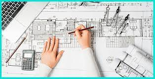

Arhitekts
Arhitekts ir kvalificēts speciālists, kas profesionāli veic arhitektonisko projektēšanu (arhitektūras vides organizēšanu), tai skaitā ēku projektēšanu, tai skaitā telpu plānojuma un interjera risinājumu izstrādi, kā arī "autouzraudzību arhitektūras objekta būvniecība."
Arhitekta profesija ir radoša un uzskatāma par brīvu; arhitekts savā darbā cenšas būt neatkarīgs un vadīties tikai pēc saviem iekšējiem priekšstatiem par skaistumu un lietderību. Taču viņam jāstrādā vēsturiskas, kultūras, materiāli tehniskās nosacītības, objektīvi pastāvošo lietderības un spēka prasību (kas izteiktas normatīvajos aktos), kā arī klientu un investoru vēlmju apstākļos.
Arhitekta profesijas specializācijas
- Projekta galvenais arhitekts parasti ir organizācijas vadītājs: arhitektūras projektēšanas birojs vai liels uzņēmums, holdings, koncerns, kas apvieno daudzas projektēšanas un ražošanas asociācijas.
- Arhitekts-dizaineris, kura pienākumos ietilpst objekta vispārējā arhitektoniskā risinājuma izstrāde: projektēšanas projekts, projekta dokumentācijas izveide (kopā ar tehniskajiem speciālistiem): asistentu grupas vadīšana darba rasējumu komplektu, maketēšanas (datormodelēšana), video prezentācijas veidošana, kā arī autoruzraudzība pār arhitektūras projekta realizāciju;
- Arhitekts-pilsētplānotājs, kurš izstrādā apdzīvotu vietu ģenerālplānus un citu pilsētplānošanas dokumentāciju Pilsētas vai rajona galvenais arhitekts ir pašvaldības darbinieks, kas nodrošina projektēšanas un regulējošo institūciju darbības koordināciju, pašvaldību normatīvo aktu pilsētplānošanas jomā izstrādi un izpildes kontroli.
- Interjera dizainers (interjera un iekārtu dizainers) - arhitekts-dizaineris, kurš nosaka ēkas interjera kopējo kompozīciju un stilu, plānojumu un tilpumtelpisko risinājumu, kā arī tā saturu un apdari;
- Ainavu arhitekte, kas izstrādā telpiskos risinājumus, apzaļumošanas un apzaļumošanas projektus, mazās arhitektūras formas: (dekoratīvie puķupodi, strūklakas, soliņi, lapenes, stēles, lampas)
- Arhitektūras vēsturnieks un teorētiķis, kas veic zinātnisku, kā arī pasniedzēju darbību arhitektūras jomā
- Arhitekts-restaurators, kas vada speciālistu grupu pieminekļu piešķiršanā, pieminekļa izpētē, dažāda veida ekspertīzēs, arhitektūras pieminekļu praktiskajā restaurācijā, rekonstrukcijā vai renovācijā
- Arhitekts-eksperts, kas veic projekta dokumentācijas ārējo ekspertīzi.
Kur var mācīties par arhitektu Latvijā:
| universitāte | studiju grādi | īsa informācija |
| RISEBA | bakalaurs | Profesionālā maģistra programma "Arhitektūra" ir loģisks un kvalitatīvs turpinājums RISEBA izveidotajai un līdz 2019. gadam akreditētai bakalaura programmai "Arhitektūra". Programma ļauj iegūt arhitekta diplomu un uzsākt patstāvīgu praksi atbilstoši arhitektu sertifikācijas noteikumiem Latvijā. |
| RTU | bakalaurs, maģistrs, doktors | Rīgas Tehniskās universitātes (RTU) Arhitektūras fakultāte (AF) visos augstākās izglītības līmeņos sagatavo speciālistus arhitektūrā. Studiju laikā ir iespējams iegūt papildzināšanas teritoriālplānošanas un kultūras pieminekļu restaurācijas jomās, kā arī interjera un ainavu arhitektūrā. RTU izdotais Arhitekta diploms, kas ir notificēts Eiropas Direktīvā «Par profesionālo kvalifikāciju atzīšanu», ir automātiski atzīts izglītības dokuments Eiropas Savienībā. |